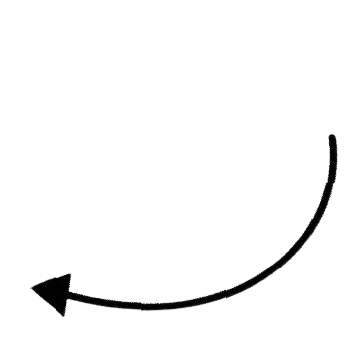

آیا از پاسخگویی به دایرکت های اینستاگرام خسته شده اید؟ هوش مصنوعی اینستاگرام راه حلی نوین برای این مشکل است. با استفاده از هوش مصنوعی، می توانید به طور خودکار به دایرکت های خود پاسخ دهید و در زمان خود صرفه جویی کنید.
فروشگاه های آنلاین: هوش مصنوعی می تواند به طور خودکار به سوالات مشتریان در مورد محصولات و خدمات پاسخ دهد، سفارشات را ثبت کند و اطلاعات مربوط به ارسال را ارائه دهد.
برندهای پوشاک: هوش مصنوعی می تواند به طور خودکار محصولات جدید را به مشتریان معرفی کند و آنها را به خرید ترغیب کند.
رستوران ها: پاسخگویی به سوالات متداول در مورد منوی رستوران، ساعات کاری، و نحوه سفارش غذا و معرفی غذاها و نوشیدنی های جدید به مشتریان
آژانس های مسافرتی: پاسخگویی به سوالات متداول در مورد مقاصد گردشگری، قیمت تورها، و نحوه رزرو تور
شرکت های آموزشی: پاسخگویی به سوالات متداول در مورد دوره های آموزشی، شهریه، و نحوه ثبت نام
هوش مصنوعی اینستاگرام ابزاری قدرتمند است که می تواند به کسب و کارهای مختلف در زمینه های مختلف کمک کند. هوش مصنوعی اینستاگرام می تواند به طور خودکار به دایرکت ها پاسخ دهد، با مخاطبان تعامل برقرار کند، و محتوای جذاب تری تولید کند.